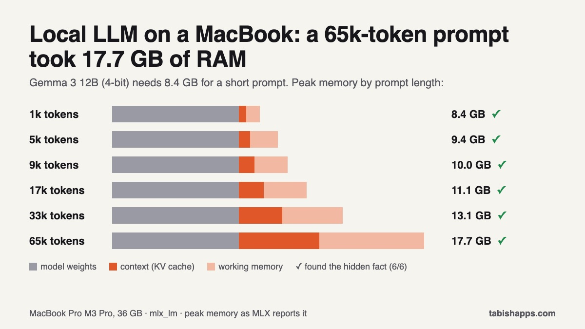
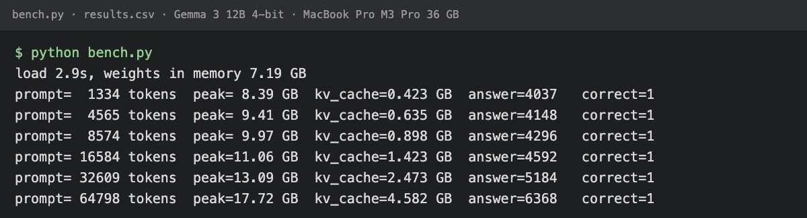

Local LLM MacBook test: a long prompt more than doubled the RAM, from 8.4 GB to 17.7 GB
- The test: a local LLM MacBook test. I ran Gemma 3 12B (4-bit, with Apple's MLX) on my MacBook Pro and fed it prompts from about 1,300 to 65,000 tokens. A secret code was hidden in the middle of each prompt.
- The result: the model alone took 7.2 GB. A short prompt peaked at 8.4 GB of memory. The 65,000-token prompt peaked at 17.7 GB. The model still found the hidden code every time, 6 out of 6.
- The advice: when you work out how much RAM you need for a local LLM, add room for the context, not just the model file. Then check how the model stores its context, because that decides how fast the memory grows.

A post on X this week made me laugh. A customer at Best Buy asked if a Mac "would run a local model". The employee said he doesn't believe in AI, so he couldn't help. About 2,400 people liked it. The customer's question is a good one, though, and it deserves a real answer.
Most guides answer it with a table: 8 GB of RAM runs this model, 16 GB runs that one. Those tables look at the size of the model file. They skip the part that grows while you use it: the context. Every word of your chat, and every page you paste in, has to sit in memory too. So I measured how much.
How I tested a local LLM on my MacBook
I wrote the rules down before the first run.
- The Mac: a MacBook Pro with an M3 Pro chip and 36 GB of unified memory, plugged in.
- The model: Gemma 3 12B instruction-tuned, 4-bit, from the mlx-community on Hugging Face. It is a popular size for 16 to 36 GB Macs. It was already on my disk; the folder is 7.5 GB.
- The runner: mlx-lm 0.29.1 on MLX 0.29.3, Apple's machine learning framework for Apple silicon. Greedy decoding, so the answer is the same every time for the same prompt.
- The prompts: a made-up warehouse log ("Log 812: Hana moved 14 boxes of paint tins from shelf C3 to shelf F22 at 9:41."), at 6 lengths from about 1,300 to about 65,000 tokens. In the middle of each log I hid one line: "Note: the code for the blue locker is 4592" (a different number each time). The last line asked for the code, number only.
- What I measured: peak memory as MLX reports it, the size of the context cache (the KV cache) after the answer, and whether the answer had the right code.
- What I did not measure: speed. I explain why in the limits section.
The test script is about 80 lines of Python. It loads the model once, runs one warm-up prompt, then runs each length with a fresh cache.
How much RAM does a local LLM need on a Mac?
Here is every run:
| Prompt length | Peak memory | Context cache (KV) | Memory above the model | Found the code? |
|---|---|---|---|---|
| 1,334 tokens | 8.39 GB | 0.42 GB | 1.20 GB | Yes (4037) |
| 4,565 tokens | 9.41 GB | 0.64 GB | 2.22 GB | Yes (4148) |
| 8,574 tokens | 9.97 GB | 0.90 GB | 2.78 GB | Yes (4296) |
| 16,584 tokens | 11.06 GB | 1.42 GB | 3.87 GB | Yes (4592) |
| 32,609 tokens | 13.09 GB | 2.47 GB | 5.90 GB | Yes (5184) |
| 64,798 tokens | 17.72 GB | 4.58 GB | 10.53 GB | Yes (6368) |

The model weights took 7.19 GB as soon as they loaded. That number never changed. Everything above it is the cost of the prompt.
Memory grew with every step. Going from about 1,300 to about 16,600 tokens added 2.7 GB. Doubling to about 32,600 tokens added 2 GB more. Doubling again to about 64,800 tokens added 4.6 GB more. At the longest prompt, the memory above the model (10.5 GB) was bigger than the model itself (7.2 GB).
So for this model, the rule of thumb is simple. Count the model file, add about 1 to 2 GB for short chats, and add more for long documents. At the long end of my runs, every extra 1,000 tokens of prompt cost about 0.14 GB.
Why does memory grow with a longer prompt?
Two things grow.
The first is the KV cache. For every token in the prompt, the model keeps a "key" and a "value" in each attention layer, so it does not have to redo that work for the next word. This is the memory of the conversation, and it grows with every token.
The second is working memory while the model reads the prompt. mlx-lm reads a long prompt in chunks, and each chunk has to look back at everything before it. That temporary space also grows with the length. In my runs it was 0.8 GB for the shortest prompt and 6 GB for the longest. At the longest prompt it was bigger than the KV cache itself (4.6 GB), which I did not expect.
This is why a "16 GB runs 12B models" table can be right and still leave you stuck. The model fits. A long chat on top of it may not, and macOS needs its own share of the same memory.
Why Gemma 3's cache stays small: the sliding window
The KV cache numbers surprised me. They were much smaller than I expected for a 12B model.
The reason is in the model design. Gemma 3 has 48 layers, but only 1 in every 6 looks at the whole prompt. The other 40 layers only look at the last 1,024 tokens: a "sliding window". The Gemma 3 technical report says Google designed it this way to cut KV cache memory at long context.
The numbers I measured match that design exactly. The 40 sliding layers use a fixed 0.34 GB, however long the prompt is. The 8 full layers add 64 KB for every token. (That is 8 layers, times a key and a value, times 8 heads of 256 numbers, at 2 bytes each.) For the 64,798-token prompt: 0.34 GB + 64,798 × 64 KB = 4.58 GB. That is the exact size I measured.
Now the comparison. If all 48 layers looked at the whole prompt, the same 65,000-token cache would need about 25.5 GB by the same math. That is my calculation, not a run, but it shows why the model design matters as much as the model size. With the sliding window, the cache was 4.58 GB.
Not every model works like this. Many models keep the full context in every layer. Before you trust a "fits in 16 GB" claim for long documents, check the model card for a sliding window, grouped-query attention, or a smaller KV cache, and test with your own longest prompt.
Can a 12B local LLM still find a fact in a long prompt?
Yes, in this test. The model gave the right code at every length, 6 out of 6, from about 1,300 to about 64,800 tokens. Each answer was just the number, as asked.
This is an easy test, to be fair. The hidden line looks different from the log lines around it, and the question names it exactly. A real document with many similar facts is harder. But it does show that the long context is usable, not just loaded.
Which MacBook do you need for a local LLM?
From this one model, here is how I would think about it. These are my estimates from the numbers above, not runs on other Macs.
- 8 GB: a 12B model at 4-bit does not fit with room for macOS. Look at models of about 4B and smaller.
- 16 GB: a 12B model at 4-bit fits for normal chats (8 to 10 GB at peak in my runs). Long documents can push you into swap, because macOS needs its own share of the same memory.
- 24 GB: a 12B model with long documents. About 32,000 tokens (13.1 GB at peak in my runs) leaves room for a browser and an editor. About 65,000 tokens (17.7 GB) is tight.
- 36 GB and up: the full 65,000 tokens fit for this model. Larger models become possible too.
Memory decides what runs. Speed depends on the chip's memory bandwidth, which is a separate question. For a related test, see how prompt caching helps a local model in long agent sessions.
Limits of this test
- No speed numbers. While I ran the test, a video job from another program was using the Mac's GPU for hours. The memory numbers and the answers are not affected by that: memory is what this process allocated, and greedy decoding gives the same answer either way. Speed is affected, so I left it out rather than publish wrong numbers.
- No 128k run. Gemma 3 supports up to 128k tokens. I planned a 128k run, but with the GPU shared it would have taken an hour, so I stopped at about 65,000.
- One model, one Mac, one run per length. The memory numbers are repeatable for the same prompt; I checked the 1k run twice and got the same 8.39 GB. Other models and other runners (Ollama, LM Studio, llama.cpp) will use different amounts.
- Peak memory is what MLX reports for this process. Activity Monitor will show a bit more, because Python and the tokenizer use memory too.
- The recall test is simple. One clear fact in synthetic text. It is not a full long-context benchmark.
- I wrote the test script and the scoring rules myself, with help from an AI coding assistant, and checked every number against the raw output.
FAQ
Can I run a local LLM on a MacBook?
Yes. In this test, Gemma 3 12B at 4-bit ran on a MacBook Pro M3 Pro with 36 GB. The model took 7.2 GB, a short prompt peaked at 8.4 GB, and a 64,798-token prompt peaked at 17.7 GB.
How much RAM do I need for a local LLM on a Mac?
Count the model file, then add room for the context and for macOS. For Gemma 3 12B at 4-bit, peak memory was 8.4 GB for a short prompt, 13.1 GB at about 32,600 tokens and 17.7 GB at about 64,800 tokens.
Does a longer prompt use more memory in a local LLM?
Yes. The KV cache grows with every token, and so does the temporary memory used while the model reads the prompt. In this test, going from about 1,300 to about 64,800 tokens added 9.3 GB of peak memory.
Which MacBook is best for a local LLM?
Memory decides what you can run, so buy the most unified memory you can. Check the model size and your longest prompt: a 12B model at 4-bit fits on 16 GB for normal chats, but long documents need 24 GB or more.
Sources
- @SullyBusiness on X, 27 November 2026: the Best Buy "would this Mac run a local model" post.
- Gemma Team, Google: Gemma 3 Technical Report (local and global attention layers, KV cache at long context).
- mlx-lm on GitHub (the runner used in this test) and mlx-community/gemma-3-12b-it-4bit (the model).